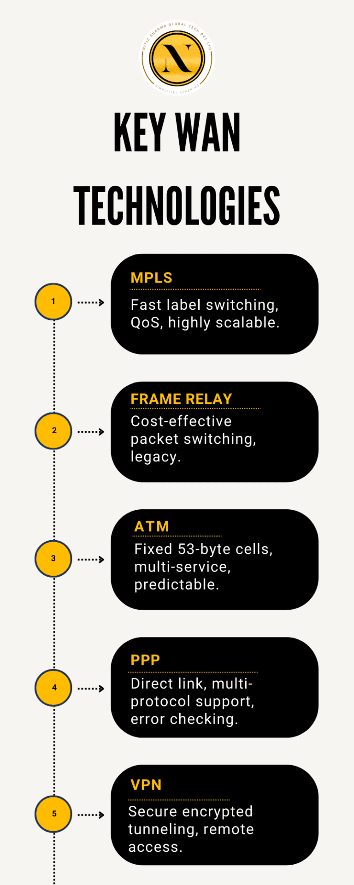

Understanding WAN Technologies
Understanding WAN Technologies
WAN Technologies are central to modern connectivity, bridging geographically dispersed networks and ensuring secure, reliable communication. For network engineers, mastering these advanced protocols is essential. This post delves into the evolution, underlying protocols, and practical challenges of WANs while examining best practices in design and troubleshooting for real-world deployments.
CCNA course fundamentals emphasize the critical role of WANs in linking branch offices, data centers, and remote users. In today’s digital landscape, understanding WAN protocols, network design, and troubleshooting strategies is indispensable for those preparing for certification or advancing in network engineering. They clearly underpin innovative solutions and consistently ensure unmatched network reliability.
1. WAN Technologies and the CCNA Framework
The Role of WANs in Networking
WANs are the conduits through which global communication flows. They connect disparate LANs and provide the infrastructure for the internet, enterprise networks, and cloud services. Given the critical nature of these networks, WAN technologies must address several key areas:
- Scalability: Supporting an ever-growing volume of data and number of users.
- Reliability: Ensuring continuous connectivity even in the face of physical or environmental challenges.
- Security: Protecting data as it travels over public or shared networks.
- Performance: Managing latency, jitter, and packet loss to optimize the end-user experience.
CCNA’s Emphasis on WAN Technologies
Within the CCNA framework, WAN technologies are taught not merely as theoretical constructs but through hands-on labs, simulations, and real-world scenarios. This approach ensures that network engineers can:
- Implement WAN Protocols: Configure and verify the operation of various WAN protocols like PPP, HDLC, and Frame Relay.
- Optimize Network Performance: Understand Quality of Service (QoS) and traffic engineering through technologies such as MPLS.
- Enhance Security: Deploy secure connections using VPNs and encryption protocols.
- Troubleshoot Effectively: Diagnose connectivity issues and optimize the performance of WAN links.
The CCNA curriculum emphasizes that while legacy technologies like Frame Relay and ATM provide historical context, modern networks increasingly rely on advanced methods such as MPLS and VPNs to meet today’s performance and security demands.
Deep Dive into Key WAN Technologies
Let’s examine the core WAN technologies in detail, highlighting their technical nuances, benefits, and limitations.
MPLS (Multiprotocol Label Switching)
MPLS is a high-performance technique that improves the speed and efficiency of network traffic by directing data based on labels rather than traditional IP routing. Here’s what makes MPLS a cornerstone technology:
- Label Switching: Packets are assigned short, fixed-length labels which streamline routing decisions. This bypasses the need for complex IP lookups, reducing latency.
- Quality of Service (QoS): MPLS supports traffic engineering, allowing network administrators to prioritize mission-critical traffic such as VoIP and video conferencing.
- Scalability: With its ability to handle large volumes of data efficiently, MPLS is ideal for modern enterprises with diverse connectivity requirements.
- Flexibility: MPLS supports various protocols, enabling the creation of VPNs and integration with different network architectures.
Deep Insight:
MPLS has become integral in environments where differentiated services are required. For example, service providers often use MPLS to create Virtual Private Networks (VPNs) that deliver both security and performance for clients. The ability to engineer traffic paths means that networks can dynamically adjust to varying load conditions, ensuring optimal performance.
Frame Relay
- Frame Relay was once the go-to technology for WAN connections due to its simplicity and cost-effectiveness. Although it is considered legacy technology today, understanding Frame Relay is still beneficial for grasping the evolution of WAN communications.
- Packet-Switching: Frame Relay uses virtual circuits to transmit variable-length frames across shared networks.
- Cost-Effective: Its design was optimized for bursty traffic, offering cost benefits over dedicated leased lines.
- Simplicity: With less overhead than other technologies, Frame Relay provided a straightforward solution for connecting remote sites.
Deep Insight:
While Frame Relay is largely deprecated, many networks still incorporate it in legacy environments. The lessons learned from its operation—such as the importance of managing congestion and understanding virtual circuit switching—are invaluable when transitioning to newer technologies.
ATM (Asynchronous Transfer Mode)
ATM is another legacy technology that played a significant role in early WAN implementations. Its unique cell-based transmission method differentiates it from packet-switching protocols.
- Fixed-Size Cells: ATM divides data into 53-byte cells, ensuring predictable transmission times.
- Versatility: It was designed to support voice, video, and data simultaneously, making it a multi-service technology.
- QoS Capabilities: The use of fixed cells allowed ATM to offer stringent QoS guarantees, essential for real-time applications.
Deep Insight:
ATM’s design philosophy focused on reducing latency and jitter, which are critical for voice and video transmissions. Although its complexity and overhead eventually led to its replacement by more flexible protocols, ATM’s contributions to QoS and multiplexing have influenced many modern WAN technologies.
Point-to-Point Protocol (PPP)
PPP is a fundamental WAN protocol used for establishing direct connections between two network nodes. Its straightforward design makes it a staple in WAN communications.
- Versatile Encapsulation: PPP can encapsulate multiple network layer protocols, making it adaptable for various applications.
- Authentication Methods: PPP supports robust authentication mechanisms such as PAP and CHAP, which help secure point-to-point connections.
- Error Detection: Its built-in error-checking features ensure data integrity across serial links.
Deep Insight:
PPP’s simplicity and reliability have made it a trusted protocol for WAN links, particularly in dial-up and leased line scenarios. Its adaptability in supporting various protocols has cemented its role in legacy systems, even as more complex technologies emerge.
VPNs and Secure WAN Connections
As organizations increasingly rely on WANs to connect remote sites and mobile users, the need for secure data transmission has become paramount. Virtual Private Networks (VPNs) provide the necessary security measures.
- Encryption and Tunneling: VPNs use encryption to secure data as it traverses public networks, forming secure tunnels that protect against eavesdropping and tampering.
- Remote Access: They enable remote workers to access corporate networks securely, ensuring business continuity.
- Integration with WAN: VPNs can be seamlessly integrated into existing WAN infrastructures, offering enhanced security without a complete overhaul of network architecture.
Deep Insight:
Modern VPN solutions, such as IPsec and SSL VPNs, have evolved to meet the challenges of cyber threats. They not only encrypt data but also provide robust authentication and integrity checks. This layered approach to security is a critical component of the CCNA curriculum, preparing engineers to safeguard enterprise networks against a range of attacks.
2. Designing Robust WANs: Best Practices
Designing an efficient WAN requires a careful balance of performance, cost, and scalability. Here are several best practices for network engineers:
Selecting the Right Network Topology
The choice of network topology influences both the performance and reliability of a WAN. Consider the following common topologies:
Hub-and-Spoke
- Advantages: Simplifies management by centralizing control at the hub.
- Disadvantages: Introduces a single point of failure and potential bottlenecks.
Mesh
- Advantages: Offers high redundancy and multiple data paths, which improve fault tolerance.
- Disadvantages: Can be costly and complex due to the number of connections required.
Hybrid
- Advantages: Combines the centralized control of hub-and-spoke with the redundancy of mesh networks.
- Disadvantages: Requires careful planning to balance complexity with performance needs.
Balancing Bandwidth and Latency
Effective WAN design requires a keen understanding of the applications served by the network. High-bandwidth applications, such as video conferencing, demand robust links, while latency-sensitive applications require optimized routing strategies. Network engineers must:
- Analyze Traffic Patterns: Identify peak usage times and high-demand applications.
- Plan for Future Growth: Anticipate increases in data volume and plan for scalable solutions.
- Plan for Future Growth: Anticipate increases in data volume and plan for scalable solutions.
Ensuring Redundancy and Failover
Business continuity hinges on the ability to maintain connectivity even during network failures. Strategies include:
- Business continuity hinges on the ability to maintain connectivity even during network failures. Strategies include:
- Diverse Routing Paths: Avoid single points of failure by routing critical traffic along multiple paths.
- Diverse Routing Paths: Avoid single points of failure by routing critical traffic along multiple paths.
Prioritizing Security in WAN Design
Given the extended reach of WANs, security must be integral to every design. Consider:
- Encryption: Deploy VPNs and encryption protocols to secure data.
- Access Controls: Implement robust authentication and authorization mechanisms.
- Access Controls: Implement robust authentication and authorization mechanisms.
3 . In-Depth Comparison of Key WAN Technologies
| Technology | Core Functionality | Primary Benefits | Considerations & Limitations |
|---|---|---|---|
| MPLS | Label-based routing for efficient traffic management | High performance, scalability, QoS support | Complexity in configuration and ongoing management |
| Frame Relay | Packet switching via virtual circuits | Cost-effective for bursty traffic, simple architecture | Largely deprecated; limited support in modern networks |
| ATM | Fixed-size cell switching for multi-service data | Predictable performance, strong QoS guarantees | High overhead and complexity; less flexible |
| PPP | Point-to-point data link protocol with encapsulation | Versatile, easy to implement, built-in error detection | Suitable mainly for simple, direct links |
| VPN | Encrypted tunneling for secure remote access | Robust security, remote access, and ease | Dependent on underlying WAN performance; potential overhead with encryption |
4 .Advanced Troubleshooting Techniques
Even with the best designs, issues may arise in WAN environments. Advanced troubleshooting skills are essential for minimizing downtime and ensuring optimal performance. Here are some techniques and tools network engineers use to diagnose and resolve WAN issues:
Identifying Connectivity Failures
Identifying Connectivity Failures
- Check cables, connectors, and physical media integrity.
- Use tools like Time Domain Reflectometers (TDRs) to detect cable faults.
Physical Layer Inspection:
Configuration Audits:
- Verify settings on routers, switches, and WAN devices
- Confirm that encapsulation types (HDLC, PPP) and authentication protocols are correctly configured.
Monitoring and Logging:
- Use network monitoring tools (e.g., SNMP, NetFlow) to identify congestion points or drops.
- Analyze logs for error messages that indicate misconfigurations or hardware failures.
Addressing Latency and Jitter
Latency and jitter can adversely affect real-time applications such as VoIP or video conferencing. To mitigate these issues:
Implement QoS Policies:
- Prioritize latency-sensitive traffic to ensure smooth delivery.
- Adjust buffer sizes and traffic shaping rules to manage bursty traffic.
Optimize Routing:
- Use dynamic routing protocols to select optimal paths.
- Incorporate load balancing across multiple links.
Upgrade Physical Infrastructure:
- Consider increasing bandwidth or switching to lower latency media.
- Evaluate the use of MPLS for more predictable routing performance.
Ensuring WAN Security
As WAN links are exposed to broader networks, robust security practices are vital:
Regular Firmware and Software Updates
- Patch vulnerabilities promptly to reduce the risk of cyberattacks.
Regular Firmware and Software Updates
- Use multi-factor authentication and encryption to secure endpoints.
Regular Firmware and Software Updates
- Deploy IDS and SIEM (Security Information and Event Management) tools to monitor network traffic for suspicious activity.
Protocol-Specific Troubleshooting
Each WAN protocol comes with its own set of challenges:
MPLS
- Verify that labels are correctly distributed and that label switched paths (LSPs) are intact.
- Verify that labels are correctly distributed and that label switched paths (LSPs) are intact.
PPP
- Confirm that authentication protocols (PAP/CHAP) are synchronized between endpoints.
- Confirm that authentication protocols (PAP/CHAP) are synchronized between endpoints.
Confirm that authentication protocols (PAP/CHAP) are synchronized between endpoints.
5 .Conclusion
WAN Technologies play a pivotal role in connecting distributed networks and enabling secure, scalable communication across vast distances. By mastering key protocols like MPLS, Frame Relay, ATM, PPP, and VPNs, network engineers can confidently design, manage, and troubleshoot complex WAN infrastructures. With thoughtful design practices and strong troubleshooting techniques, engineers ensure reliable performance in real-world deployments.
If you’re looking to strengthen your understanding, CCNA Course online training offers structured learning to help you gain hands-on expertise. Whether you’re preparing for certification or managing enterprise networks, staying current with WAN technologies will keep your skills sharp and your network solutions efficient, future-ready, and aligned with global industry standards.